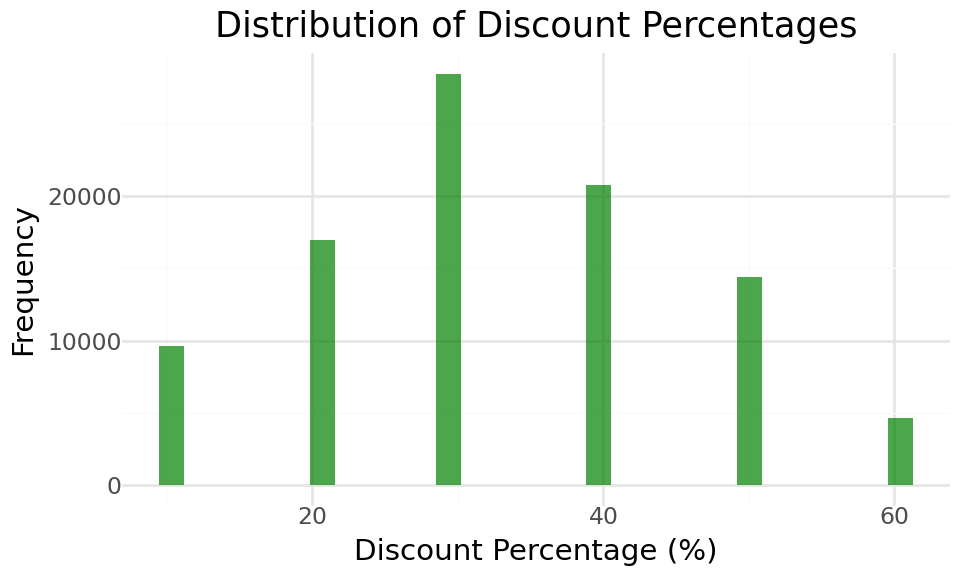
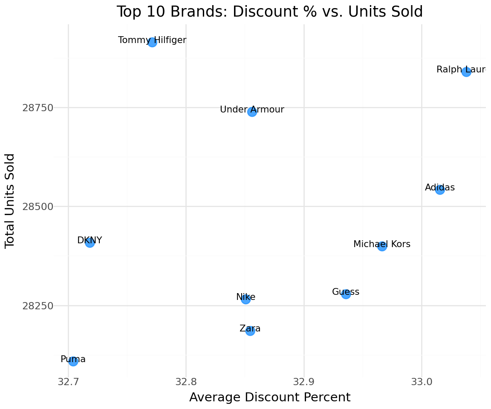
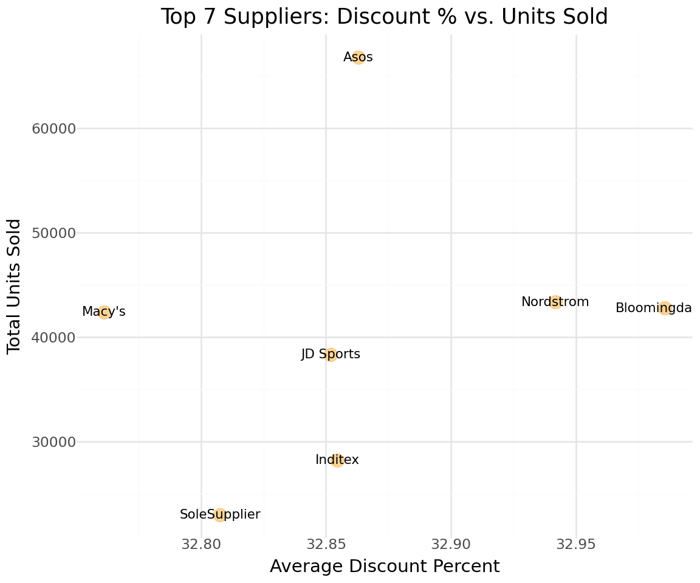

In this project, we attempt to provide insights on Faro and its retail business of discounted branded products.
Author
Dan A. Tshisungu
Published
June 23, 2025
1. Background
Faro, an off-price retailer that specialises in selling branded products at discounted prices. The business wants to understand which product types, brands, and
suppliers move fastest, how pricing affects inventory turnover, and how customer shopping habits vary by region and time.
2. Data Cleaning and preparation
2.1. Load data
We load the dataset and display the first 10 transactions.
We check the distribution of both the numerical and categorical features. But first we extract numerical and categorical features.
Code
numerical_columns = df.select_dtypes(include="number").columns.to_list()categorical_columns = df.select_dtypes(exclude="number").columns.to_list()print(f"Numerical features in the dataset: {numerical_columns}")print(f"Categorical features in the dataset: {categorical_columns}")
Numerical features in the dataset: ['OriginalPrice', 'DiscountedPrice', 'Quantity']
Categorical features in the dataset: ['TransactionID', 'StoreID', 'Date', 'ProductID', 'Brand', 'Supplier', 'Category', 'Subcategory', 'Type', 'CustomerID', 'Region', 'ClearanceFlag']
Features Insights
Remember we have to convert the Date feature later on.
A. Numerical features
Distribution of numerical features:
Listing 1: Skewness plot
Code
# Extract numerical featuresnumerical = ["OriginalPrice", "DiscountedPrice", "Quantity"]for feat in numerical: # Extract skewnessprint(f"Feature: {feat}:") skewness = skew(df[feat])# Printprint(f"Skewness is {skewness}")# Generate plot p = (ggplot(df, aes(x=feat)) + geom_density(color='darkgreen', alpha=.7) + ggtitle(f"Distribution of {feat} (Skewness: {skewness:.2f})") + xlab(feat) + ylab("Density") + theme_minimal())# Show the plot p
Feature: OriginalPrice:
Skewness is -0.0028062700583212194
Feature: DiscountedPrice:
Skewness is 0.35201956858296896
Feature: Quantity:
Skewness is -0.576037618829498
Numerical feature Insights
OriginalPrice feature is uniformly distributed meaning products are sold throughout the price range and no particular OriginalPrice is informative.
DiscountedPrice feature is skewed to the right meaning most products are sold at a lower DiscountedPrice, up to R140, compared to higher prices, above R150.
Quantity feature displays how products are not sold in no particular quantity.
We also observe one or two items returned every now and then, 5% of the sales.
Statistical Measure of Numerical features
Listing 2: Numerical features description
Code
df.describe()
OriginalPrice
DiscountedPrice
Quantity
count
100000.000000
100000.000000
100000.000000
mean
160.068899
107.431994
2.770260
std
80.798129
59.216377
1.698319
min
20.010000
8.000000
-2.000000
25%
89.720000
58.140000
2.000000
50%
160.180000
103.060000
3.000000
75%
230.060000
149.980000
4.000000
max
300.000000
270.000000
5.000000
B. Categorical features
We check the count of classes within each categorical feature:
At this stage Listing 2, we observed that the lowest of value of the Quantity feature is -2. We must take care of returned products as well create a RevenueCaution 1.
Features
Every returned product was entered as a negative number. We create a new feature to describe if a product is return. e.g IsReturn.
Machine learning behave differently to the presence of negative numbers such as quantity = -1. We must consider both the business logic (A negative quantity means a return and thus an opportunity loss) and the model performance impact.
Code
# 1. Separate quantities and create indicatorsdf['QuantityAbs'] = df['Quantity'].abs()# Identify returnsdf['IsReturn'] = (df['Quantity'] <0).astype(int)df['TransactionType'] = df['Quantity'].apply(lambda x: 'Return'if x <0else'Sale')# 2. Create revenue Revenue with proper handlingdf['RevenueAbs'] = np.where(df['ClearanceFlag'] =='No', df['QuantityAbs'] * df['OriginalPrice'], df['QuantityAbs'] * df['DiscountedPrice'])# 3. Create final Revenue (negative for returns)df['RevenueFinal'] = np.where(df['IsReturn'] ==1, -df['RevenueAbs'], df['RevenueAbs'])# 4. Drop original Quantity if desireddf = df.drop('Quantity', axis=1)# 5. create time-based featuresdf['Year'] = df['Date'].dt.yeardf['Month'] = df['Date'].dt.monthdf['WeekOfYear'] = df['Date'].dt.isocalendar().weekdf['DayOfWeek'] = df['Date'].dt.dayofweek# 6. Calculate discount percentagedf['DiscountPercentage'] = ((df['OriginalPrice'] - df['DiscountedPrice']) / df['OriginalPrice'] *100).round(2)df
TransactionID
StoreID
Date
ProductID
Brand
Supplier
Category
Subcategory
Type
OriginalPrice
...
QuantityAbs
IsReturn
TransactionType
RevenueAbs
RevenueFinal
Year
Month
WeekOfYear
DayOfWeek
DiscountPercentage
0
T100000
S008
2024-04-12
P4655
Puma
Asos
Footwear
Sneakers
Lifestyle Sneakers
243.03
...
5
0
Sale
1215.15
1215.15
2024
4
15
4
20.00
1
T100001
S007
2024-04-12
P9119
Nike
Asos
Kids
Baby
Booties
144.83
...
5
0
Sale
724.15
724.15
2024
4
15
4
10.00
2
T100002
S008
2024-04-09
P4186
Puma
SoleSupplier
Kids
Girls
Dress
60.00
...
4
0
Sale
240.00
240.00
2024
4
15
1
40.00
3
T100003
S008
2024-02-07
P2999
Ralph Lauren
Bloomingdale's
Footwear
Sandals
Flip Flops
20.22
...
2
0
Sale
16.18
16.18
2024
2
6
2
59.99
4
T100004
S009
2024-01-22
P2853
Michael Kors
Bloomingdale's
Footwear
Sandals
Flip Flops
21.98
...
2
0
Sale
43.96
43.96
2024
1
4
0
10.01
...
...
...
...
...
...
...
...
...
...
...
...
...
...
...
...
...
...
...
...
...
...
99995
T199995
S006
2024-03-13
P1324
Adidas
Asos
Kids
Baby
Booties
212.40
...
3
0
Sale
637.20
637.20
2024
3
11
2
10.00
99996
T199996
S003
2024-02-11
P2084
Adidas
JD Sports
Apparel
Outerwear
Coat
56.19
...
4
0
Sale
224.76
224.76
2024
2
6
6
30.01
99997
T199997
S009
2024-04-03
P3564
Michael Kors
Nordstrom
Apparel
Dresses
Casual Dress
216.02
...
4
0
Sale
864.08
864.08
2024
4
14
2
40.00
99998
T199998
S003
2024-02-14
P3085
Nike
Asos
Kids
Baby
Booties
166.14
...
5
0
Sale
830.70
830.70
2024
2
7
2
20.00
99999
T199999
S005
2024-03-29
P3182
Zara
Inditex
Footwear
Boots
Knee-high Boots
223.12
...
3
0
Sale
267.75
267.75
2024
3
13
4
60.00
100000 rows × 24 columns
C. Outlier Analysis
We observed Listing 1 that DiscountedPrice is skewed to the right indicating the presence of outliers.
There are many ways to detect outliers:
By calculating the skewness of the distribution and establishing a threshold
By visualizing the distribution of features
And more advanced methods more outlier detection
Using the IQR for the feature.
Above Listing 1 we applied the first two. We can confirm that with the last method:
For DiscountedPrice, we have:
min = 8
25% = 58
50% = 103
75% = 149.98
100% = 270
By finding the difference between each interval, we can deduce from where outliers occur:
25% - min = 50
50% - 25% = 45
75% - 50% = 46
100% - 75%= 120
Outliers Insight
We notice a jump from 75th percentile to the 100th depicting outliers.
75th percentile + 50 = ~200. Anything above 200 in the DiscountedPrice is an outlier.
Though a mild skewness (0.35) is observed, we will attempt to deal with it.
Transformation Skewness
0 Original 0.352
1 Log -0.781
2 Sqrt -0.176
3 BoxCox -0.116
4 YeoJohnson -0.116
Best transformation: BoxCox
Final implementation
Code
# Apply Box-Cox and store the Lambda value df['DiscountedPriceBoxCox'], lambda_val = boxcox(df['DiscountedPrice'] +1)# Drop original columndf = df.drop('DiscountedPrice', axis=1)# Update your revenue calculation with transformed pricesdf['RevenueAbs'] = np.where(df['ClearanceFlag'] =='No', df['QuantityAbs'] * df['OriginalPrice'], df['QuantityAbs'] * df['DiscountedPriceBoxCox'])print(f"New skewness: {stats.skew(df['DiscountedPriceBoxCox']):.3f}")df.head(5)
New skewness: -0.116
TransactionID
StoreID
Date
ProductID
Brand
Supplier
Category
Subcategory
Type
OriginalPrice
...
IsReturn
TransactionType
RevenueAbs
RevenueFinal
Year
Month
WeekOfYear
DayOfWeek
DiscountPercentage
DiscountedPriceBoxCox
0
T100000
S008
2024-04-12
P4655
Puma
Asos
Footwear
Sneakers
Lifestyle Sneakers
243.03
...
0
Sale
1215.150000
1215.15
2024
4
15
4
20.00
30.868606
1
T100001
S007
2024-04-12
P9119
Nike
Asos
Kids
Baby
Booties
144.83
...
0
Sale
724.150000
724.15
2024
4
15
4
10.00
24.486402
2
T100002
S008
2024-04-09
P4186
Puma
SoleSupplier
Kids
Girls
Dress
60.00
...
0
Sale
240.000000
240.00
2024
4
15
1
40.00
11.337297
3
T100003
S008
2024-02-07
P2999
Ralph Lauren
Bloomingdale's
Footwear
Sandals
Flip Flops
20.22
...
0
Sale
8.567399
16.18
2024
2
6
2
59.99
4.283699
4
T100004
S009
2024-01-22
P2853
Michael Kors
Bloomingdale's
Footwear
Sandals
Flip Flops
21.98
...
0
Sale
43.960000
43.96
2024
1
4
0
10.01
7.776294
5 rows × 24 columns
Summary of Data Preparation
We loaded our dataset and check its observations and features
We made sure there were no missing values nor any duplicated values
We created new features to enrich our dataset and make it more consistent for further analysis.
We converted Date and transformed the DiscountedPrice feature to handle the format for the former and outliers for the latter.
3. Exploratory Data Analysis
We explore the dataset in depth and answer business questions.
Let us have a look at the updated dataset’s features:
units_by_category = df_sales.groupby('Category')['QuantityAbs'].sum().sort_values(ascending=False)units_by_brand = df_sales.groupby('Brand')['QuantityAbs'].sum().sort_values(ascending=False).head(15)units_by_supplier = df_sales.groupby('Supplier')['QuantityAbs'].sum().sort_values(ascending=False).head(15)category_units_df = units_by_category.reset_index()category_units_df.columns = ['Category', 'Units']brand_units_df = units_by_brand.reset_index()brand_units_df.columns = ['Brand', 'Units']supplier_units_df = units_by_supplier.reset_index()supplier_units_df.columns = ['Supplier', 'Units']print("Top 5 Categories by units sold:")for i, (cat, units) inenumerate(units_by_category.head().items(), 1):print(f"{i}. {cat}: {units:,} units")print("\nTop 5 Brands by units sold:")for i, (brand, units) inenumerate(units_by_brand.head().items(), 1):print(f"{i}. {brand}: {units:,} units")print("\nTop 5 Suppliers by units sold:")for i, (brand, units) inenumerate(units_by_supplier.head().items(), 1):print(f"{i}. {brand}: {units:,} units")
Top 5 Categories by units sold:
1. Accessories: 71,445 units
2. Apparel: 71,300 units
3. Kids: 71,154 units
4. Footwear: 70,780 units
Top 5 Brands by units sold:
1. Tommy Hilfiger: 28,915 units
2. Ralph Lauren: 28,840 units
3. Under Armour: 28,739 units
4. Adidas: 28,542 units
5. DKNY: 28,408 units
Top 5 Suppliers by units sold:
1. Asos: 66,762 units
2. Nordstrom: 43,342 units
3. Bloomingdale's: 42,764 units
4. Macy's: 42,366 units
5. JD Sports: 38,301 units
Revenue Generated Analysis (Sales Only)
Code
revenue_by_category = df_sales.groupby('Category')['RevenueFinal'].sum().sort_values(ascending=False)revenue_by_brand = df_sales.groupby('Brand')['RevenueFinal'].sum().sort_values(ascending=False).head(15)revenue_by_supplier = df_sales.groupby('Supplier')['RevenueFinal'].sum().sort_values(ascending=False).head(15)category_revenue_df = revenue_by_category.reset_index()category_revenue_df.columns = ['Category', 'Revenue']brand_revenue_df = revenue_by_brand.reset_index()brand_revenue_df.columns = ['Brand', 'Revenue']supplier_revenue_df = revenue_by_supplier.reset_index()supplier_revenue_df.columns = ['Supplier', 'Revenue']print("\nTOP 5 Categories by Revenue:")for i, (cat, rev) inenumerate(revenue_by_category.head().items(), 1):print(f"{i}. {cat}: R {rev:,.2f}")print("\nTOP 5 Brands by Revenue:")for i, (brand, rev) inenumerate(revenue_by_brand.head().items(), 1):print(f"{i}. {brand}: R {rev:,.2f}")print("\nTOP 5 Suppliers by Revenue:")for i, (brand, rev) inenumerate(units_by_supplier.head().items(), 1):print(f"{i}. {brand}: R {rev:,.2f}")
TOP 5 Categories by Revenue:
1. Kids: R 10,225,549.88
2. Apparel: R 10,210,762.89
3. Accessories: R 10,159,280.09
4. Footwear: R 10,110,418.12
TOP 5 Brands by Revenue:
1. Tommy Hilfiger: R 4,117,751.97
2. DKNY: R 4,116,944.23
3. Under Armour: R 4,111,537.65
4. Ralph Lauren: R 4,078,220.00
5. Adidas: R 4,072,014.76
TOP 5 Suppliers by Revenue:
1. Asos: R 66,762.00
2. Nordstrom: R 43,342.00
3. Bloomingdale's: R 42,764.00
4. Macy's: R 42,366.00
5. JD Sports: R 38,301.00
Code
p1 = (ggplot(category_units_df, aes(x='reorder(Category, Units)', y='Units')) + geom_col(fill='skyblue', alpha=0.8) + coord_flip() + labs(title='Units Sold by Category', x='Category', y='Total Units Sold') + theme_minimal() + theme(figure_size=(6, 4)))p1
Tommy Hilfiger is the op selling brand in both units and revenue, followed by DKNY in revenue but 3rd in units sold.
Note that most brand have sold more than 28000 units and have all generated more than R4,000,000.00.
3.2. Discount effect on top brands & suppliers
Find top brands and suppliers
Code
# Get top brands & supplierstop_brands = units_by_brand.head(10).index.tolist()top_suppliers = units_by_supplier.head(10).index.tolist()# Extract data from sales based on top performingdiscount_brand_data = df_sales[df_sales['Brand'].isin(top_brands)].copy()discount_supplier_data = df_sales[df_sales['Supplier'].isin(top_suppliers)].copy()# summary for discounted or notdiscount_summary = df_sales.groupby('ClearanceFlag').agg({'QuantityAbs': ['sum', 'mean'],'RevenueFinal': ['sum', 'mean'],'DiscountPercentage': 'mean'}).round(2)# discount data for scatter plotdiscount_scatter_df = df_sales[df_sales['DiscountPercentage'] >0].sample(min(5000, len(df_sales[df_sales['DiscountPercentage'] >0]))).copy()# discount distributiondiscount_dist_df = df_sales[df_sales['DiscountPercentage'] >0].copy()print("Discount Impact Summary:")print("Without Discount:")print(f" - Average units per transaction: {discount_summary.loc['No', ('QuantityAbs', 'mean')]:.2f}")print(f" - Total units sold: {discount_summary.loc['No', ('QuantityAbs', 'sum')]:,}")print("With Discount:")print(f" - Average units per transaction: {discount_summary.loc['Yes', ('QuantityAbs', 'mean')]:.2f}")print(f" - Total units sold: {discount_summary.loc['Yes', ('QuantityAbs', 'sum')]:,}")print(f" - Average discount percentage: {discount_summary.loc['Yes', ('DiscountPercentage', 'mean')]:.1f}%")
Discount Impact Summary:
Without Discount:
- Average units per transaction: 3.00
- Total units sold: 227,842
With Discount:
- Average units per transaction: 2.99
- Total units sold: 56,837
- Average discount percentage: 52.5%
Code
# distribution of discountp7 = (ggplot(discount_dist_df, aes(x='DiscountPercentage')) + geom_histogram(bins=30, fill='green', alpha=0.7) + labs(title='Distribution of Discount Percentages', x='Discount Percentage (%)', y='Frequency') + theme_minimal() + theme(figure_size=(5, 3)))p7

Brand Discount % and units sold
Code
# Group by Brandbrand_summary = ( discount_dist_df.groupby('Brand') .agg(TotalUnitsSold=('QuantityAbs', 'sum'), AvgDiscountPercent=('DiscountPercentage', 'mean')) .reset_index())# Select top 10 brandstop_brands = brand_summary.nlargest(10, 'TotalUnitsSold')p8 = ( ggplot(top_brands, aes(x='AvgDiscountPercent', y='TotalUnitsSold', label='Brand')) + geom_point(color='dodgerblue', size=4, alpha=0.8) + geom_text(nudge_y=5, size=8) + labs( title='Top 10 Brands: Discount % vs. Units Sold', x='Average Discount Percent', y='Total Units Sold' ) + theme_minimal() + theme(figure_size=(6, 5)))p8

Brand discount % and Units
Tommy Hilfiger has sold the most units with an average discount while Ralph Lauren is second best with highest discount percentage.
We also note that Zara, Nike, and Under Amour have the same average discount percentage but have a large disparity in the number of units sold.
Supplier Discount % and units sold
Code
# Group by Suppliersupplier_summary = ( discount_dist_df.groupby('Supplier') .agg(TotalUnitsSold=('QuantityAbs', 'sum'), AvgDiscountPercent=('DiscountPercentage', 'mean')) .reset_index())# Select top 10 supplierstop_suppliers = supplier_summary.nlargest(10, 'TotalUnitsSold')# Select top 10 brandstop_brands = brand_summary.nlargest(10, 'TotalUnitsSold')p9 = ( ggplot(top_suppliers, aes(x='AvgDiscountPercent', y='TotalUnitsSold', label='Supplier')) + geom_point(color='forestgreen', size=4, alpha=0.8) + geom_text(nudge_y=5, size=8) + labs( title='Top 10 Suppliers: Discount % vs. Units Sold', x='Average Discount Percent', y='Total Units Sold' ) + theme_minimal() + theme(figure_size=(6, 5)))p9

Supplier discount % and Units
Macy's, Nordstrom, and Bloomingda have sold almost the same number of units but the two latter have a very high discount percentage compared to the first.
discount percentage is normally distributed around a 30% discount for products indicating that most discounted units are sold at an average discount, thus when a brand or supplier sells a lot, it is not based on the discount applied.
Asos has the most units sold with and without discount applied. - Brands tend to sell same volume of discounted units ( ~ 4800).
3.3. Average turnover
Code
# Calculate weekly sales per store (sales only)weekly_sales = df_sales.groupby(['StoreID', 'WeekOfYear'])['QuantityAbs'].sum().reset_index()avg_weekly_turnover = weekly_sales.groupby('StoreID')['QuantityAbs'].mean().sort_values(ascending=False)print("Stores performance KPI:")print(f"- Best performing store: {avg_weekly_turnover.index[0]} ({avg_weekly_turnover.iloc[0]:.1f} units/week)")print(f"- Average weekly turnover across all stores: {avg_weekly_turnover.mean():.1f} units/week")print(f"- Median weekly turnover: {avg_weekly_turnover.median():.1f} units/week")print(f"- Standard deviation: {avg_weekly_turnover.std():.1f} units/week")print("\nTop 5 Stores by weekly turnover:")for i, (store, turnover) inenumerate(avg_weekly_turnover.head(5).items(), 1):print(f"{i}. Store {store}: {turnover:.1f} units/week")
Stores performance KPI:
- Best performing store: S002 (1438.0 units/week)
- Average weekly turnover across all stores: 1423.4 units/week
- Median weekly turnover: 1423.8 units/week
- Standard deviation: 8.5 units/week
Top 5 Stores by weekly turnover:
1. Store S002: 1438.0 units/week
2. Store S010: 1429.9 units/week
3. Store S003: 1428.4 units/week
4. Store S001: 1428.2 units/week
5. Store S009: 1426.5 units/week
Now we check some plots
Code
# Prepare data for store analysisturnover_df = avg_weekly_turnover.reset_index()turnover_df.columns = ['StoreID', 'AvgWeeklyTurnover']p11 = (ggplot(turnover_df, aes(x='AvgWeeklyTurnover')) + geom_histogram(bins=30, fill='purple', alpha=0.7) + labs(title='Distribution of Average Weekly Turnover by Store', x='Average Weekly Units Sold', y='Number of Stores') + theme_minimal() + theme(figure_size=(7, 5)))p11
Clearance vs Non-Clearance (Sales Only):
QuantityAbs RevenueFinal
sum mean sum mean
ClearanceFlag
No 227842 3.00 36373670.00 479.34
Yes 56837 2.99 4332340.98 227.65
Faro has sold more items at normal price (227842 units for R36,373,670.00) than at discount price ( 56837 units for R4,332,340.98).
The return rates for items by their clearance status is roughly the same, 5.1% when sold at not price and 4.9% when sold at discounted price indicating that clearance does not impact the return.
# Convert Target feature into Integerdf["ClearanceFlag"] = (df["ClearanceFlag"] =='Yes').astype(int)
4.2. Feature Selection
Feature selection is a very important step in machine learning, just like the saying garbage in, garbage out, feeding the wrong features may negatively impact the model performance.
There are numerous way to select what features, recursive selection, mutual information, to more advanced methods making use of evolutionary algorithms such as particle swarm optimization or grey wolf.
In this project, we will follow a simple mutual information(MI), a concept from information theory telling us how much we can learn from a feature if we know the value of of another.
## ---- Extract and create "ClearanceFlag" for the different splitsy_train = df_train["ClearanceFlag"].valuesy_val = df_val["ClearanceFlag"].valuesy_test = df_test["ClearanceFlag"].values### ------ Delete "ClearanceFlag"from the splitsdel df_train['ClearanceFlag']del df_val['ClearanceFlag']del df_test['ClearanceFlag']
Numerical and Categorical features
We drop out some features (TransactionID, ProductID, customerID) as they will not add value to our model.
Code
df.Year.head(5)df.Year.describe()
count 100000.0
mean 2024.0
std 0.0
min 2024.0
25% 2024.0
50% 2024.0
75% 2024.0
max 2024.0
Name: Year, dtype: float64
DiscountPercentage has a 0.74 correlation with ClearanceFlag indicating that higher discount percentage likely to sell the product at clearance which is obvious.
RevenueAbs (-0.47) and RevenueFinal (-0.25) indicate that when revenue increases, the item is unlikely to have been sold at clearance.
Naturally increasing the DiscountedPrice will result in the unlikelihood of the item being sold at clearance.
Categorical
Code
# Convert `IsReturn` into a categorical variabledf["IsReturn"] = df["IsReturn"].astype("category")categorical_cols = ['StoreID', 'Brand', 'Supplier', 'Category', 'Subcategory', 'Type', 'Region','IsReturn','TransactionType']### ----- Define the function to calculate the M.I on the training set ONLYdef calculate_mi(series):return mutual_info_score(series, y_train)#### ---- Calculate MI between 'y' and the categorical variables of the training set ONLY df_mi = df_train[categorical_cols].apply(calculate_mi)df_mi = df_mi.sort_values(ascending=False).to_frame(name='MI')print('Below are the variable with highest M.I score:')display(df_mi.head(15))
Below are the variable with highest M.I score:
MI
Type
0.000433
Brand
0.000134
StoreID
0.000116
Subcategory
0.000114
Region
0.000077
Supplier
0.000027
Category
0.000026
IsReturn
0.000004
TransactionType
0.000004
Note:
Knowing the Type of the product provides more information on whether or not it will be sold at clearance.
TransactionType and IsReturn values are not very informative.
Brand, StoreID, and Subcategory values also provide valuable information on the target feature status.
Selected Fearures
Code
# Based on correlationselected_num = ['OriginalPrice', 'QuantityAbs','RevenueAbs', 'RevenueFinal', 'DiscountPercentage','DiscountedPriceBoxCox']# Based on MIselected_cat = ['StoreID', 'Brand', 'Supplier', 'Category', 'Subcategory', 'Type', 'Region']df_train[selected_num + selected_cat]df_val[selected_num + selected_cat]df_test[selected_num + selected_cat]
OriginalPrice
QuantityAbs
RevenueAbs
RevenueFinal
DiscountPercentage
DiscountedPriceBoxCox
StoreID
Brand
Supplier
Category
Subcategory
Type
Region
75721
218.24
4
872.960000
872.96
30.00
26.853611
S008
Tommy Hilfiger
Nordstrom
Apparel
Outerwear
Blazer
KZN
80184
282.47
5
1412.350000
1412.35
30.00
31.170162
S006
Zara
Inditex
Apparel
Dresses
Evening Dress
KZN
19864
109.00
5
545.000000
545.00
30.00
17.866154
S004
Nike
JD Sports
Accessories
Bags
Satchel
KZN
76699
155.27
4
621.080000
621.08
30.00
22.017959
S001
Adidas
JD Sports
Accessories
Bags
Clutch
GP
92991
252.09
1
252.090000
252.09
20.00
31.526161
S010
Michael Kors
Nordstrom
Kids
Girls
Sandals
KZN
...
...
...
...
...
...
...
...
...
...
...
...
...
...
32595
214.89
3
65.607114
322.32
50.00
21.869038
S008
Zara
Inditex
Accessories
Jewelry
Necklace
WC
29313
294.06
2
588.120000
-588.12
30.00
31.899540
S001
Guess
Asos
Footwear
Sandals
Flip Flops
KZN
37862
20.80
2
41.600000
41.60
30.00
6.371448
S005
Nike
JD Sports
Accessories
Jewelry
Necklace
KZN
53421
84.97
4
50.205867
169.92
50.01
12.551467
S008
DKNY
Bloomingdale's
Accessories
Belts
Canvas Belt
KZN
42410
289.43
3
868.290000
868.29
40.00
28.921796
S004
Adidas
Asos
Kids
Toys
Puzzle
WC
20000 rows × 13 columns
4.3. Cross validation
Code
# splits = 5 as we have a lot of datacv = StratifiedKFold(n_splits=5, shuffle=True, random_state=42)
4.4. Train
We first build a base model then we try to improve upon it. For a better understanding, I will not make use of third-party package like optuna or hyperopt.
4.4.1. Base Logistic regression
Code
## ----- Initialize the encoder: ------dv = DictVectorizer(sparse=False)## ---- Apply the transformation on the training settrain_dict = df_train[selected_num + selected_cat].to_dict(orient='records')X_train = dv.fit_transform(train_dict)## ---- Apply the transformation on the validation set (for evaluation)val_dict = df_val[selected_num + selected_cat].to_dict(orient='records')X_val = dv.transform(val_dict)#### Training on Logistic regressionmodel = LogisticRegression(solver='liblinear', C=1.0, max_iter=1000, random_state =42)model.fit(X_train, y_train)# Predict on validation sety_pred = model.predict(X_val)# Compute metricsaccuracy = accuracy_score(y_val, y_pred)precision = precision_score(y_val, y_pred, average='weighted') recall = recall_score(y_val, y_pred, average='weighted')# Print resultsprint("Base logistic regression")print(f"Validation Accuracy : {accuracy:.4f}")print("Classification report on baseline LR model:")print(classification_report(y_val, y_pred))
We noticed earlier a very high correlation between certain features to the clearance status. This results in a model learning for example that whenever DiscountPercentage is high, predict ClearanceFlag=Yes.
A feature like Revenue is a target-leaking feature as it was engineered based on the ClearanceFlag status.
Solution: Drop any feature that is engineered from the target feature and observe the result.
C:\Users\dants\Documents\Projects\Faro Analytics\faro\.venv\Lib\site-packages\sklearn\metrics\_classification.py:1509: UndefinedMetricWarning: Precision is ill-defined and being set to 0.0 in labels with no predicted samples. Use `zero_division` parameter to control this behavior.
C:\Users\dants\Documents\Projects\Faro Analytics\faro\.venv\Lib\site-packages\sklearn\metrics\_classification.py:1509: UndefinedMetricWarning: Precision is ill-defined and being set to 0.0 in labels with no predicted samples. Use `zero_division` parameter to control this behavior.
C:\Users\dants\Documents\Projects\Faro Analytics\faro\.venv\Lib\site-packages\sklearn\metrics\_classification.py:1509: UndefinedMetricWarning: Precision is ill-defined and being set to 0.0 in labels with no predicted samples. Use `zero_division` parameter to control this behavior.
Logistic Regression Base model
No overfitting, that is a good sign.
The base model never predicts class 1 (Clearance) as the accuracy is 80% which is also the percentage of observations that were sold at normal price.
Recall for class 1 = 0 indicating all actual clearance items are missed.
Precision for class 1 = 0 indicating when it predicts class 1 (which it doesn’t), it’s always wrong.
Macro avg: Treats both classes equally which exposes failure on class 1.
Weighted avg: Dominated by class 0 which looks better but hides the issue.
Possible solutions: - class_weight=‘balanced’ in Logistic Regression to penalize misclassification of rare class more. - Try a sampling technique such oversampling or undersampling or SMOTE. - Use a tree-based models like decision tree.